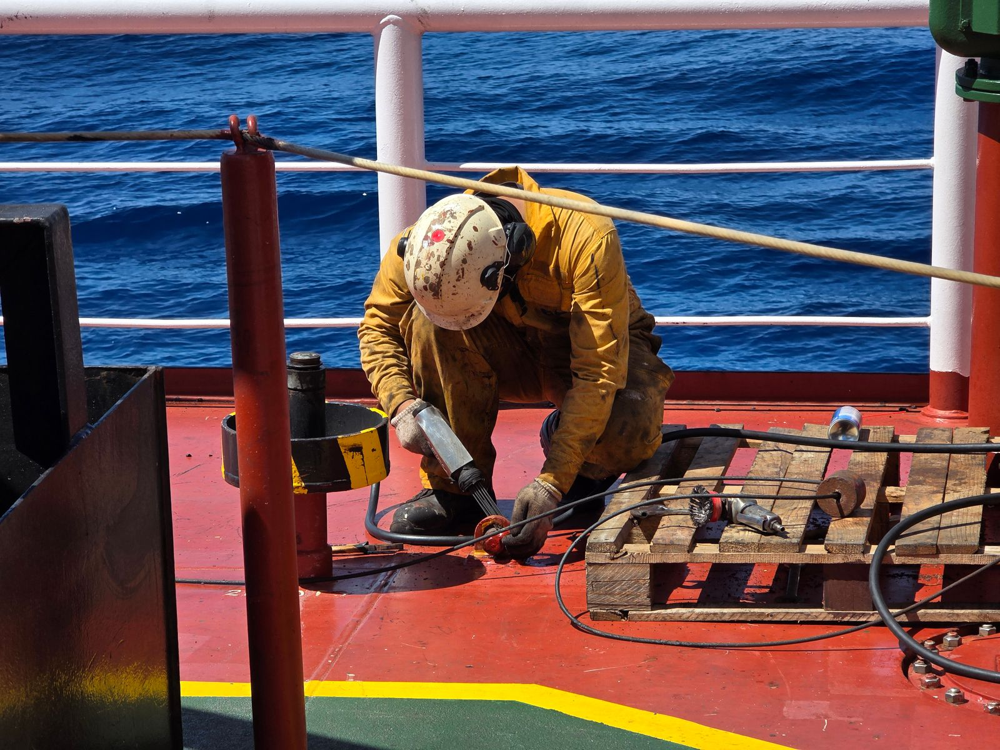

The diver & the plan
A welder first. A diver second. A planner always.
The route down
I learned the trade the dry way round: an apprenticeship as a welder in the yards, coded work on structural steel and pipe, and a foreman who failed my test pieces in front of me until they stopped failing. The welding ticket came first, and it still matters more than the diving one — a diver who cannot weld is a taxi service, and a welder who cannot dive is topside.
Commercial diving school followed, then seasons of air diving in harbours and on inshore civils: quay walls, outfalls, lock gates, the unglamorous structures a country actually floats on. Saturation qualification came later — closed-bell work on pipeline campaigns in the North Sea, living under pressure for weeks at a time, where the dive plan is a document the whole vessel works from and the decompression at the end is measured in days.
Sixteen seasons on, Reid Subsea is a small practice on purpose. I lead every dive team personally, the certificate pack goes out with every tender, and the log book — the real one, paper, in the control container — is the document this website is designed to resemble.

How a job is planned
Five stages. No stage is skippedbecause the weather looks fine.
- 1
Survey or proper brief
If nobody has dived the structure, the first day is a survey day at the inspection rate — credited if the repair follows. Drawings and the client's own records are read before anyone prices anything.
- 2
The written plan
Depths and pressures worked from the one formula, team named by role — supervisor, working diver, standby diver, tender — method chosen (wet, dry habitat, cut) with its limits stated, and the estimate issued against the rate card.
- 3
Permits & limits agreed
Permit-to-work with the asset owner, and the abort criteria signed by both sides: current, visibility, weather, equipment, and the standing rule that any team member — including the client — can call a stop without giving a reason in the moment.
- 4
The work, logged daily
The client gets a daily log: who dived, how long, what was done, what was found, with CCTV and stills. If the job changes underwater, the log changes the same day — not in a revised invoice three weeks later.
- 5
Report & sign-off
A written report per structure — findings, repairs made, inspection results, and what to watch next, with the interval we recommend before the next look. The report is written to be read by the engineer who inherits the structure after us.
The honesty page
What this practice will not do,printed where you can quote it.
The stop line
Diving is suspended when conditions run outside the signed plan — current over the limit, visibility under it, weather closing, a fault in any life-support equipment, or any team member calling it. A stopped day is charged at the standby terms agreed in advance, and the reason is written in the log the same day. Three jobs in sixteen seasons have been stopped on this line. All three clients rebooked.
No firm quote without a survey. A structure nobody has dived is a structure nobody can price. Anyone who quotes your repair to the pound from a photograph is quoting the photograph.
Wet is not dry. A wet weld cools in the water around it and is specified accordingly — repairs, attachments, temporary works, and permanent repairs only where an approved procedure and inspection support it. If your repair needs dry quality, we will tell you it needs a habitat, even though the habitat line is the expensive one.
No procedures on a website. This site prints principles — the pressure formula, the team roles, the limits. It does not publish decompression schedules, gas plans or welding procedures. Those live in the dive plan, written for your job, your depths and your team, and reviewed before mobilisation.
Engagement terms. Day rates are per 12-hour operational window, excl. VAT. Weather standby 60% where the vessel is held. Payment 30 days from invoice. Saturation campaigns are crewed by agreement, priced per campaign after the brief — the rate card's deep band is the starting point, not the answer.